Idea 01 · Un nivel
La simpleza de llegar y disfrutar
Piensa en espacios conectados, luz natural y una relación directa con el jardín.
Quiero conversar sobre esta ideaVerano 2027 · Costa Colbún
Ven a conocer el condominio este verano. Recorre sus terrenos de 1.500 m², descubre el acceso compartido al lago e imagina aquí tu próxima casa.
UF al 28/10/2026: $41.231,70 · CLP referenciales
Compra hasta el 28 de febrero de 2027 · Bono sujeto a condiciones de construcción y fachada.
Si quieres comprar para construir, ven a conocer Costa Colbún. Un condominio a orillas del lago para disfrutar los fines de semana, las vacaciones y los momentos en familia.
Quiero conocer el proyectoUF 300
Para compras realizadas hasta el 28 de febrero de 2027.
Consulta antes de comprar los criterios de fachada, los requisitos de acreditación y la forma de aplicación del bono. El beneficio está condicionado al cumplimiento de estos requisitos.
Consultar el bono y sus condiciones →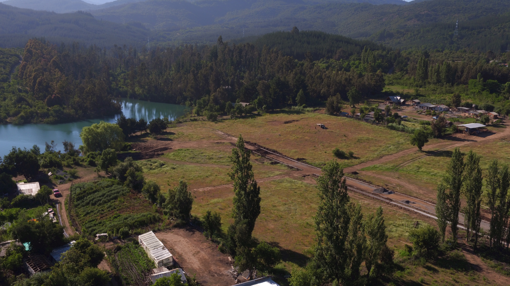
Costa Colbún es un condominio exclusivo de 32 parcelas privilegiadas a orillas del Lago Colbún, diseñado para quienes valoran la tranquilidad, la privacidad y la conexión con la naturaleza.
Cada terreno de 1.500 m² te ofrece el espacio perfecto para construir tu casa de lago soñada, con acceso directo a la orilla del lago compartida por todos los residentes del condominio.
Un proyecto de 32 sitios de 1.500 m², con acceso a una orilla compartida por los residentes. Conoce el entorno y elige dónde quieres construir.
Rodeado de montañas, bosques nativos y las aguas cristalinas del Lago Colbún. Naturaleza en estado puro.
Acceso a la orilla compartida del condominio para disfrutar el lago y los días al aire libre.
Terrenos de 1.500 m² para proyectar tu casa, tu terraza y tus espacios al aire libre.
Solo 32 parcelas, no cientos. Menos vecinos significa más tranquilidad, más espacio y una comunidad selecta.
Comunidad cerrada con acceso controlado. Seguridad y privacidad para ti y tu familia.
Proyecta una casa a tu medida y conoce los lineamientos de fachada que cuidan la armonía del condominio.
UF al 28/10/2026: $41.231,70 · CLP referenciales
Fuente UF: indicadores.cl · Tabla oficial SII
Equivalentes referenciales en CLP, redondeados al peso. La venta se expresa en UF. Consulta el precio y la disponibilidad de cada sitio.
Consultar terrenos y valores Explora financiamiento hipotecario con Santander →Si estás evaluando comprar un sitio en Costa Colbún, conoce las alternativas hipotecarias de Banco Santander y consulta la factibilidad de financiamiento para tu caso.
La evaluación debe considerar tanto tus antecedentes como los del terreno y el destino del crédito. El banco define las condiciones aplicables a cada operación.

Consulta disponibilidad, valor y antecedentes del terreno que te interesa.
Consulta qué producto puede aplicar y presenta los antecedentes que Santander solicite.
Confirma pie, monto, plazo, tasa y gastos antes de decidir.
Consulta independiente con Santander. El otorgamiento está sujeto a evaluación comercial, de riesgo y del inmueble. Las marcas identifican al proyecto y a la entidad a consultar; esta información no acredita un convenio ni garantiza aprobación o condiciones preferentes.
Información oficial de Banco Santander ↗Una casa para los fines de semana, las vacaciones o un nuevo ritmo de vida. Cuéntanos qué estás buscando y conversemos sobre los sitios que puedes conocer.
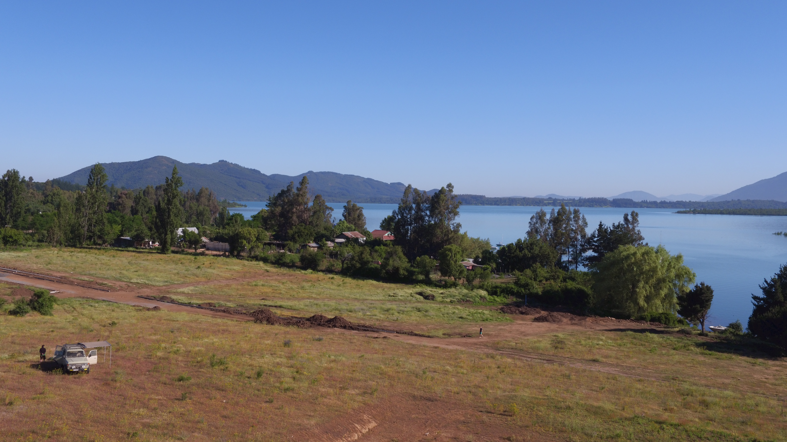
Un condominio de 32 sitios con acceso a una orilla compartida.
Imagina tus mañanas con el reflejo del sol en el agua, tardes de navegación y atardeceres que quitan el aliento.
Veleros, kayaks, botes a motor. El lago es tu patio trasero.
Wakeboard, ski acuático, paddleboard y más aventuras sobre el agua.
Trucha, pejerrey y más especies en las aguas del Lago Colbún.
Contempla los colores del cielo reflejados en el lago cada tarde.
La terraza donde se alargan las conversaciones. Una ventana abierta al paisaje. Espacios para estar juntos. Tu casa comienza con la forma en que quieres vivirla.
Piensa en espacios conectados, luz natural y una relación directa con el jardín.
Quiero conversar sobre esta ideaProyecta una casa que se abra al exterior, con espacio para compartir y disfrutar el entorno.
Así imagino mi casaExplora cómo separar las zonas de descanso de los espacios de reunión familiar.
Quiero explorar esta opciónEsquemas conceptuales de inspiración. No corresponden a modelos en venta, planos aprobados ni construcciones incluidas en el precio del terreno. El diseño, la fachada y su factibilidad deben revisarse para cada proyecto.
Compra hasta el 28 de febrero de 2027 y consulta cómo acceder al beneficio, sujeto al plazo de contratación y a la aprobación previa de fachada.
Ver condicionesDurante tu visita, conoce el lugar y conversemos sobre los antecedentes que necesitas para dar el siguiente paso.
Consultar antecedentes del proyectoRevisa el plano, la ubicación, la superficie, la orientación y el valor vigente del sitio que te interese.
Consulta las condiciones de agua, electricidad, caminos y gastos comunes antes de definir tu compra.
Conoce la orilla del condominio y consulta las condiciones de uso de los espacios comunes.
Solicita los lineamientos de fachada y revisa los antecedentes y requisitos aplicables a tu casa.
Una vista aérea del entorno de Costa Colbún para comenzar a imaginar tu próxima casa.
Fotografías del proyecto. Para revisar la ubicación y características de cada sitio, consulta el plano y coordina una visita.
Descubre las parcelas, el entorno y la vida de lago que te espera en el Lago Colbún.
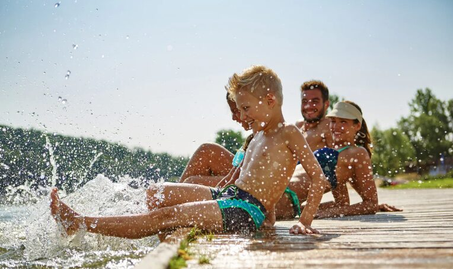
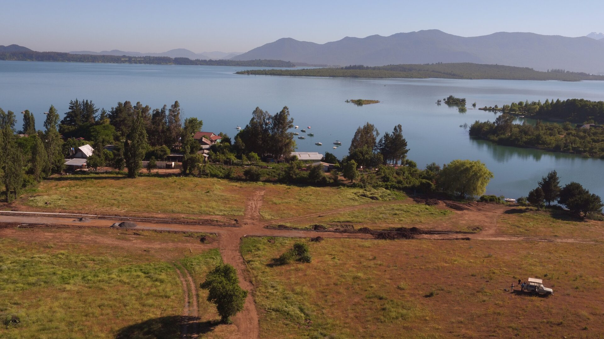
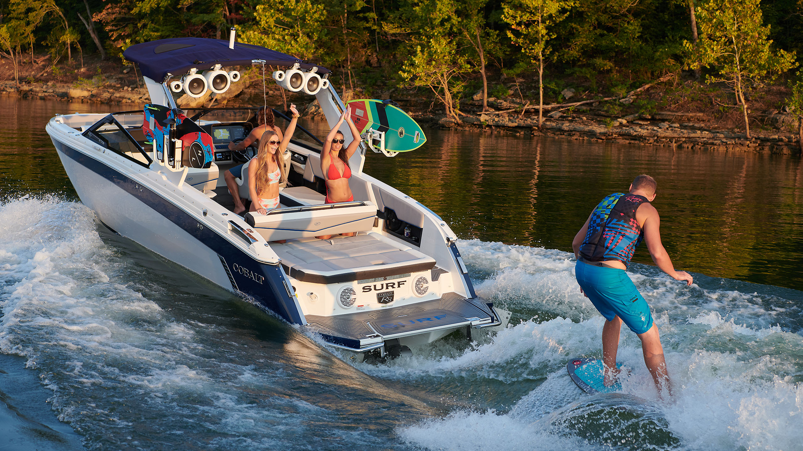
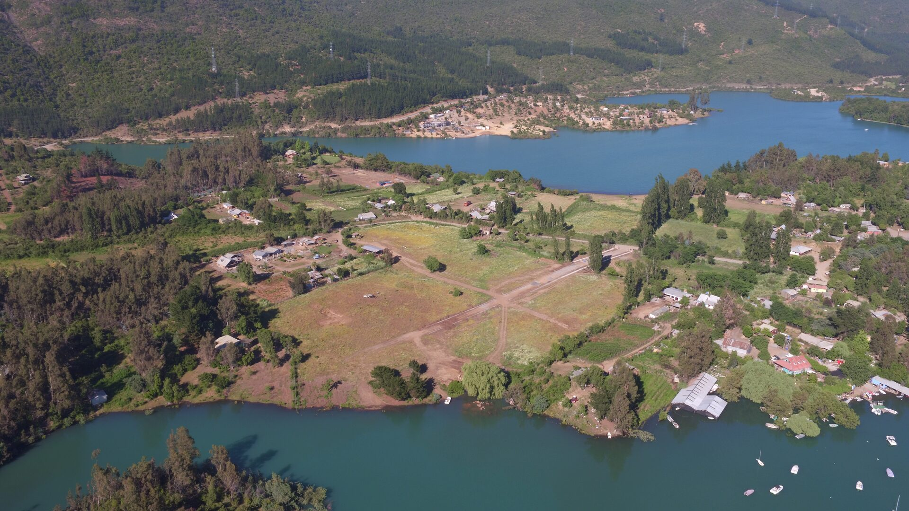
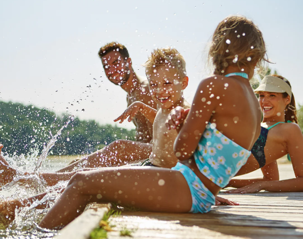
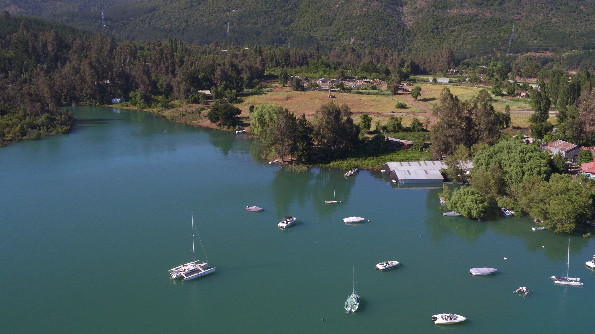
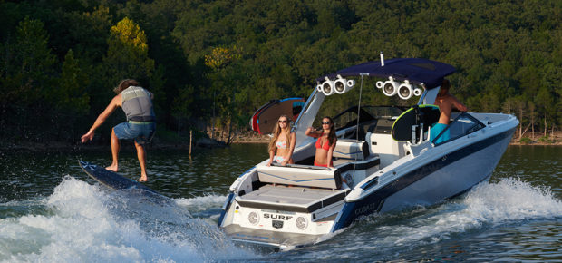
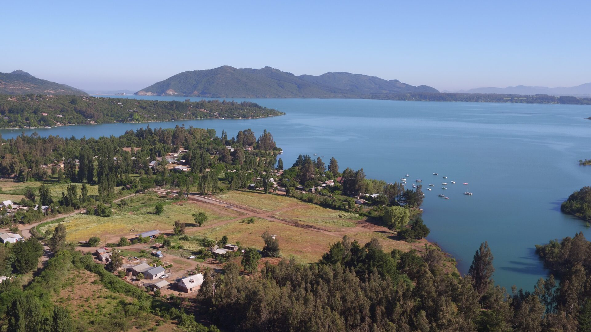
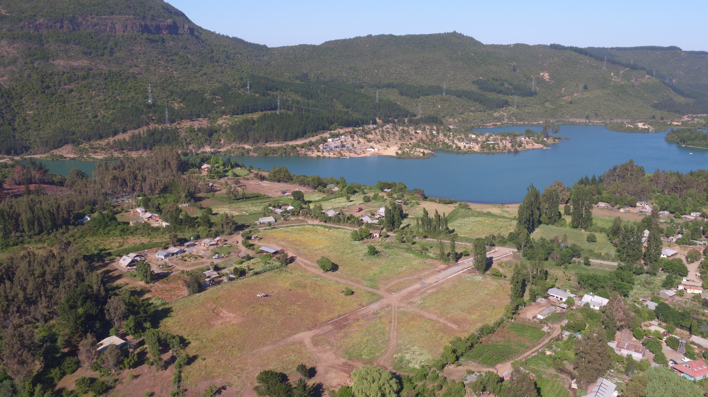
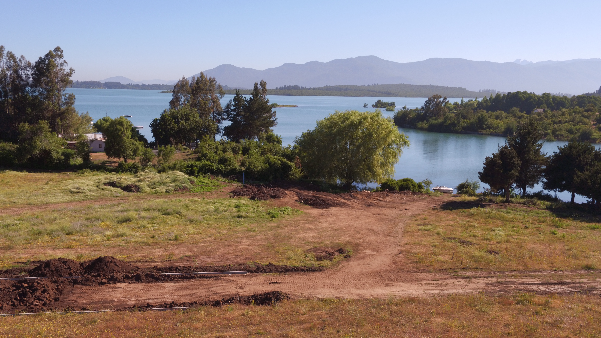
Guías, consejos y todo lo que necesitas saber sobre parcelas, terrenos e inversión en el Lago Colbún.
Descubre por qué los terrenos lakefront en Colbún son la inversión más inteligente de la Región del Maule.
15 de marzo, 2025Todo lo que necesitas considerar antes de comprar un sitio a orillas de un lago.
28 de febrero, 2025Navegación, wakeboard, pesca y más: la vida de lago que te espera en Costa Colbún.
10 de febrero, 2025Conoce en detalle las 32 parcelas exclusivas y qué hace único a este condominio.
20 de enero, 2025Factores clave: orientación, acceso al agua, regulaciones y plusvalía.
5 de enero, 2025Recorre las parcelas del Lago Colbún como si estuvieras ahí. Explora cada rincón de Costa Colbún en una vista panorámica interactiva.
Arrastra para girar la vista • Usa la rueda del mouse para zoom • Click en los puntos para navegar
Colbún Alto, Km 8.5 — Región del Maule, Chile
Servicios básicos, comercio local y abastecimiento.
Capital provincial con todos los servicios urbanos.
Capital regional con aeródromo, hospitales, universidades.
Pueblo artesanal famoso por cestería y tejido en crin.
Termas de Quinamávida y Panimávida a minutos.
Reserva Nacional Bellotos del Melado con fauna protegida.
Las fotografías son el comienzo. Recorre Costa Colbún y descubre cómo se siente estar aquí.
Conoce los accesos, el entorno y la orilla compartida del lago.
Consulta disponibilidad y compara ubicación, orientación y vistas en persona.
Revisa los lineamientos de fachada y las condiciones del bono de construcción.
Cuéntanos qué día te acomoda. Confirmaremos contigo la fecha y el horario.
El acceso al lago es a una orilla compartida por los residentes del condominio. Durante la visita podrás conocerla y revisar la ubicación de los terrenos disponibles.
Solicita los lineamientos arquitectónicos y los antecedentes del terreno antes de definir tu casa. Para acceder al bono, la fachada debe contar con aprobación previa y debes contratar la construcción dentro de los seis meses posteriores a la compra.
La campaña aplica a compras realizadas hasta el 28 de febrero de 2027. Consulta antes de comprar cómo se acredita el cumplimiento de los requisitos y cómo se aplica el beneficio.
El proyecto contempla 32 sitios de 1.500 m². Los valores publicados van desde 1.840 hasta 2.420 UF. Consulta el precio y la disponibilidad vigente del sitio que te interese; la construcción se cotiza por separado.
Sí. Escríbenos con tus preferencias de ubicación, vistas y presupuesto para consultar el plano y las opciones vigentes antes de coordinar tu visita.
Solicita las condiciones y antecedentes vigentes del sitio que estás evaluando. Te recomendamos revisar estos puntos junto con el plano y los lineamientos para construir antes de tomar tu decisión.
No. Los esquemas son ideas conceptuales de inspiración. El precio publicado corresponde al terreno. El diseño y la construcción de la casa se evalúan y cotizan por separado.
Cuéntanos con quién quieres desarrollar tu proyecto y consulta las condiciones aplicables antes de contratar. Para el bono, la fachada debe aprobarse previamente conforme a los lineamientos del proyecto.
Hay decisiones que comienzan al conocer el lugar. Ven a recorrer Costa Colbún y conversemos sobre el terreno donde quieres construir.
Cuéntanos qué buscas y qué día te acomoda. Te confirmaremos personalmente la fecha y el horario.
Para compras hasta el 28 de febrero de 2027, sujeto a plazo de contratación y aprobación previa de fachada. Conoce las condiciones →